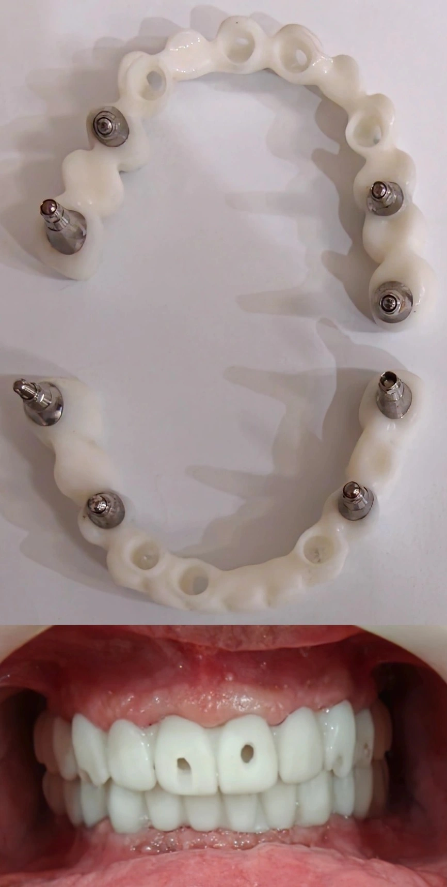

Insight 60 — راهکاری مدیریت عدم قطعیت VD و رابطهی فکی در بیماران تمامفک
تاریخ انتشار:
آخرین بازبینی:
English

توضیح بالینی
در بازسازی تمامفک با ایمپلنت، چون خطای VD و رابطه در ناحیهی قدام بیشتر از خلف اثر میگذارد و خطای قدام برخلاف خلف با تراش جبران نمیشود، اباتمنتهای خلفی از همان اول ساخته میشوند تا پترن رزین روی آنها بنشیند؛ اباتمنتهای قدامی فقط بعد از تأیید نهایی VD ساخته میشوند
این یادداشت دربارهی مرحلهای است که در بازسازی تمامفک با ایمپلنت، بین ثبت اولیهی رابطه و VD و ساخت نهایی پروتز قرار میگیرد: امتحان پترن رزین سر یونیت. وقتی این امتحان نشان میدهد VD یا رابطه باید اصلاح شود، سؤال اصلی این است که کدام اباتمنتها تا این مرحله ساخته شدهاند و کدام هنوز نه. در ادامه، منطق هندسیِ چرا خطای قدام و خلف یکسان رفتار نمیکنند و رویکردی که بر همین اساس اباتمنتهای خلفی و قدامی را در دو مرحلهی جدا میسازد.
-
مسئله
وقتی برای فولماوس یا تمام فک اسکن میگیرم، ثبت رابطه و VD همیشه درصدی احتمال خطا دارد. مرحلهی بعد لابراتوار پترن رزین میسازد و سر یونیت اکلوژن و VD چک میشود. کل فلسفهی این مرحله همین است: خطای احتمالی را قبل از ورود به مراحل گران پیدا کنیم.
گیر کار اینجاست که پترن رزین باید روی چیزی بنشیند. اگر لابراتوار برای همین مرحله اباتمنت اصلی تمام ایمپلنتها را بسازد و بعد از امتحان معلوم شود VD یا رابطه باید عوض شود، بخشی از آن اباتمنتها دیگر به کار نمیآیند. -
اباتمنت رزینی چرا جواب نداد
یک راه معمول این است که لابراتوار اباتمنتها را رزینی بزند تا پترن رزین جایی برای نشستن داشته باشد. یک بار این کار را برایم انجام دادند و آنقدر غیردقیق بود که بود و نبودش هیچ کمکی نکرد. برای ارزیابی VD به یک نشست تکرارپذیر نیاز دارم، نه به قطعهای که خودش لق است. -
منطق هندسی: چرا قدام و خلف فرق دارند
باز یا بسته کردن VD یعنی چرخش مندیبل حول محور لولایی. جابهجایی خطی هر نقطه با فاصلهاش از این محور نسبت مستقیم دارد. مولر نزدیک محور است و ثنایا دورترین نقطهی قوس. به همین دلیل تغییری در VD که در ناحیهی قدام یک میلیمتر دیده میشود، در ناحیهی مولر کسری از میلیمتر است. خطای رابطه خودش چرخشی نیست، اما چون اباتمنتهای قدام زاویهدارند، تغییر رابطه روی قدام بیشتر از خلف اهمیت پیدا میکند.
یک نکته را باید دقیق گفت. با تغییر VD خودِ اباتمنت جابهجا نمیشود، اباتمنت روی ایمپلنت خودش سر جایش است. چیزی که تغییر میکند موقعیت دندانهای نهایی نسبت به اباتمنت است، و همین است که اباتمنتِ ساختهشده را از کار میاندازد. -
چرا خلف در عمل مشکلساز نیست
در خلف، خطا تقریباً همیشه از جنس ارتفاع است نه زاویه، و ارتفاع قابل مدیریت است.
مهمتر از آن، VD را از همان ابتدا حدودی درست میگیرم. یعنی چیزی که بعد از امتحان پترن رزین قرار است اصلاح شود مقدار کمی است، نه بازتعریف کامل ارتفاع. در این محدوده، اگر مجبور شویم VD را افزایش دهیم مقدارش آنقدر نیست که اباتمنت خلفی کوتاه از آب دربیاید، و اگر کم کنیم هم با تراش و اصلاح قابل رفع است. به همین دلیل ساختن اباتمنت اصلی برای ایمپلنتهای خلفی قبل از امتحان، ریسک معناداری ندارد. -
چرا خطای قدام قابل جبران نیست
اباتمنتهای قدامی هم زاویهدارترند و هم موقعیت دندان قدامی با تغییر VD بیشتر جابهجا میشود. وقتی اورجت و اوربایت عوض شود، مسیر ورود، محل مارجین و ضخامت در دسترس در قدام تغییر میکند. این از جنس خطای زاویه است و با تراش نجات پیدا نمیکند. یعنی همان ناحیهای که بیشترین احتمال تغییر را دارد، کمترین قابلیت اصلاح را هم دارد. -
کاری که میکنم
لابراتوار برای ایمپلنتهای خلفی اباتمنت اصلی میسازد. نشست، گیر و ثبات پترن رزین از همینها میآید. ناحیهی قدام بدون اباتمنت میماند و اباتمنتهای قدامی بعد از تأیید نهایی VD و رابطه ساخته میشوند. -
در این کیس
در تصویر، پترن رزین با اباتمنتهای خلفی و ناحیهی قدام خالی ساخته شده و سر یونیت کاملاً استیبل نشست. اکلوژن و فرم دندانها را بررسی کردم و مشکلی نداشت، اما VD کمی نیاز به افزایش داشت. چون اباتمنتهای قدامی هنوز ساخته نشده بودند، این ایراد فقط یک ثبت جدید هزینه داشت، نه دور ریختن اباتمنتهای ساختهشده. -
حرف آخر
در بازسازی کامل فک، فرض اینکه ثبت اولیه قطعی است فرض گرانقیمتی است. جدا کردن اباتمنتهای خلفی بهعنوان بیس نشستن از اباتمنتهای قدامی بهعنوان قطعاتی که به VD نهایی وابستهاند، کاری میکند که مرحلهی پترن رزین همان کاری را بکند که برایش طراحی شده، بدون اینکه اصلاح کردن خودش خرج بتراشد.
محتوای این صفحه برای استفادهٔ آموزشی دندانپزشکان و دانشجویان دندانپزشکی تهیه شده است.